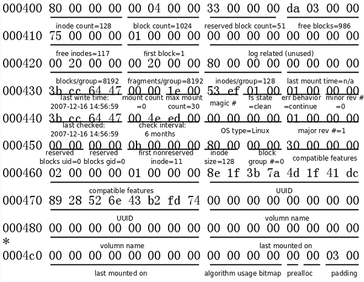
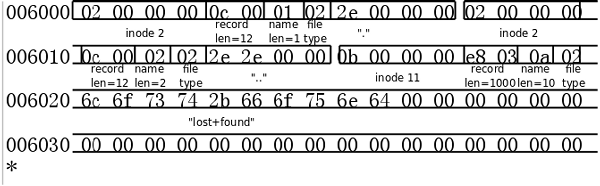

ext2文件系统
Table of Contents
ext2

文件系统中存储的最小单位是块（Block），一个块究竟多大是在格式化时确定的，例如
mke2fs的-b选项可以设定块大小为1024、2048或4096字节,默认是1024byte。
一个分区的开头必须有1k的boot block，这1k是PC标准规定的，任何文件系统不能使用这
块内容,启动块之后才是文件系统。
ext2文件系统将整个分区划成若干个同样大小的块组（Block Group）
超级块（Super Block）
描述 整个分区 的文件系统信息，例如块大小、文件系统版本号、上次mount的时间等
等。超级块在每个块组的开头都有一份拷贝。(占用一个block块大小).
由于super block很重要 ，在每个 block group都会存一份进行备份.
块组描述符表（GDT，Group Descriptor Table）
由很多块组描述符组成，整个分区分成多少个块组就对应有多少个块组描述符。每个
块组描述符（Group Descriptor）存储一个块组的描述信息，例如在这个块组中从哪
里开始是inode表，从哪里开始是数据块，空闲的inode和数据块还有多少个等等。和
超级块类似，块组描述符表在每个块组的开头也都有一份拷贝，这些信息是非常重要
的，一旦超级块意外损坏就会丢失整个分区的数据，一旦块组描述符意外损坏就会丢
失整个块组的数据，因此它们都有多份拷贝。/通常内核只用到第0个块组中的拷贝/，当
执行e2fsck检查文件系统一致性时，第0个块组中的超级块和块组描述符表就会拷贝到
其它块组，这样当第0个块组的开头意外损坏时就可以用其它拷贝来恢复，从而减少损
失。
块位图（Block Bitmap）
一个块组中的块是这样利用的：数据块存储所有文件的数据，比如某个分区的块大小
是1024字节，某个文件是2049字节，那么就需要三个数据块来存，即使第三个块只存
了一个字节也需要占用一个整块；超级块、块组描述符表、块位图、inode位图、
inode表这几部分存储该块组的描述信息。那么如何知道哪些块已经用来存储文件数据
或其它描述信息，哪些块仍然空闲可用呢？块位图就是用来描述整个块组中哪些块已
用哪些块空闲的，它本身占一个块，其中的每个bit代表本块组中的一个块，这个bit
为1表示该块已用，这个bit为0表示该块空闲可用。
为什么用df命令统计整个磁盘的已用空间非常快呢？因为只需要查看每个块组的块位
图即可，而不需要搜遍整个分区。相反，用du命令查看一个较大目录的已用空间就非
常慢，因为不可避免地要搜遍整个目录的所有文件。
与此相联系的另一个问题是：在格式化一个分区时究竟会划出多少个块组呢？主要的
限制在于块位图本身必须只占一个块。用mke2fs格式化时默认块大小是1024字节，可
以用-b参数指定块大小，现在设块大小指定为b字节，那么一个块可以有8b个bit，这
样大小的一个块位图就可以表示8b个块的占用情况，因此一个块组最多可以有8b个块，
如果整个分区有s个块，那么就可以有s/(8b)个块组。格式化时可以用-g参数指定一个
块组有多少个块，但是通常不需要手动指定，mke2fs工具会计算出最优的数值。
inode位图（inode Bitmap）
和块位图类似，本身占一个块，其中每个bit表示一个inode是否空闲可用。
inode表（inode Table）
我们知道，一个文件除了数据需要存储之外，一些描述信息也需要存储，例如文件类
型（常规、目录、符号链接等），权限，文件大小，创建/修改/访问时间等，也就是
ls -l命令看到的那些信息，这些信息存在inode中而不是数据块中。每个文件都有一
个inode，一个块组中的所有inode组成了inode表。

inode表占多少个块在格式化时就要决定并写入块组描述符中，mke2fs格式化工具的默认策
略是一个块组有多少个8KB就分配多少个inode。由于数据块占了整个块组的绝大部分，也
可以近似认为数据块有多少个8KB就分配多少个inode，换句话说，如果平均每个文件的大
小是8KB，当分区存满的时候inode表会得到比较充分的利用，数据块也不浪费。如果这个
分区存的都是很大的文件（比如电影），则数据块用完的时候inode会有一些浪费，如果这
个分区存的都是很小的文件（比如源代码），则有可能数据块还没用完inode就已经用完了，
数据块可能有很大的浪费。如果用户在格式化时能够对这个分区以后要存储的文件大小做
一个预测，也可以用mke2fs的-i参数手动指定每多少个字节分配一个inode。
数据块（Data Block）
根据不同的文件类型有以下几种情况
- 对于常规文件，文件的数据存储在数据块中。
- 对于目录，该目录下的所有文件名和目录名存储在数据块中，注意文件名保存
在它所在目录的数据块中，除文件名之外，ls -l命令看到的其它信息都保存在
该文件的inode中。注意这个概念：目录也是一种文件，是一种特殊类型的文件。
- 对于符号链接，如果目标路径名较短则直接保存在inode中以便更快地查找，如
果目标路径名较长则分配一个数据块来保存。
- 设备文件、FIFO和socket等特殊文件没有数据块，设备文件的主设备号和次设
备号保存在inode中
默认的块大小是4k.
dd if=/dev/zero of=fs count=256 bs=4K mke2fs fs块大小是1024字节，1MB的分区共有1024个块，第0个块是启动块，启动块之后才算ext2文
件系统的开始，因此Group 0占据第1个到第1023个块，共1023个块。块位图占一个块，共
有1024×8=8192个bit，足够表示这1023个块了，因此只要一个块组就够了。默认是每8KB
分配一个inode，因此1MB的分区对应128个inode，这些数据都和dumpe2fs的输出吻合。
从000000开始的1KB是启动块，由于这不是一个真正的磁盘分区，启动块的内容全部为
零。从000400到0007ff的1KB是超级块，对照着dumpe2fs的输出信息，详细分析如下：

从000800开始是块组描述符表，这个文件系统较小，只有一个块组描述符，对照着
dumpe2fs的输出信息分析如下：

dumpe2fs /dev/vg1/portage dumpe2fs /tmp/fs
Group 0: (Blocks 1-1023)
Primary superblock at 1, Group descriptors at 2-2
Reserved GDT blocks at 3-5
Block bitmap at 6 (+5), Inode bitmap at 7 (+6)
Inode table at 8-23 (+7)
986 free blocks, 117 free inodes, 2 directories
Free blocks: 38-1023
Free inodes: 12-128
jkk块组描述符指出，空闲的inode有117个，由于文件系统是新创建的，空闲的inode也是
连续的，inode编号从1到128，空闲的inode编号从12到128。从inode位图可以看出，前
11位都是1，表示前11个inode已用
001c00这一行的128位就表示了所有inode，因此下面的行不管是0还是1都没有意义。已
用的11个inode中，前10个inode是被ext2文件系统保留的，其中第2个inode是根目录，
第11个inode是lost+found目录，块组描述符也指出该组有两个目录，就是根目录和
lost+found。
整个文件系统是1MB，每个块是1KB，应该有1024个块，除去启动块还有1023个块，分别编
号为1-1023，它们全都属于Group 0。其中，Block 1是超级块，接下来的块组描述符指出，
块位图是Block 6，因此中间的Block 2-5是块组描述符表，其中Block 3-5保留未用。块
组描述符还指出，inode位图是Block 7，inode表是从Block 8开始的，那么inode表到哪
个块结束呢？由于超级块中指出每个块组有128个inode，每个inode的大小是128字节，因
此共占16个块，inode表的范围是Block 8-23,

所以数据块从第24block开始 24*1024 =0x6000
数据块里的记录是不定长的，
结构是
inode号（4bytes）|记录长度 (2bytes)|filename length(1byte)|filetype(1byte)|filename(不定长)|
上图中分别显示 了 . .. lost+found
00006000: 0200 0000 0c00 0102 2e00 0000 0200 0000 …………….
00006010: 0c00 0202 2e2e 0000 0b00 0000 1400 0a02 …………….
00006020: 6c6f 7374 2b66 6f75 6e64 0000 0c00 0000 lost+found……
00006030: 1000 0501 6865 6c6c 6f00 0000 0d00 0000 ….hello…….
以上内容分别是
0200 0000 对应的inode号是0x00000002 ,
0c00 此条记录共长 12 (0x000c=12),
01 filename名长度是1,
02 filetype 是2,表示目录
2e00 0000 0x00000023 是 "." ,即/目录下的"."
这几个字节数数正好是12bytes
接下的来描述的是 ".."
0200 0000
0c00 0202 2e2e 0000
接下来的描述的是"lost+found"
0b00 0000 1400 0a02
6c6f 7374 2b66 6f75 6e64 0000
对应0b00 0000 ,0x0000000b号inode,即第11个inode
1400 ，0x0014表示，此程记录共占用20byte,
0a 文件长度是10,
02 文件类型是目录
6c6f 7374 2b66 6f75 6e64 是lost+found几个字,
你可以把“lost+found”写到一个文件中，用十六进制编辑器查看
,最后那4个0不太理解。
可用的命令
dumpe2fs
系统函数
#include <stdio.h> #include <dirent.h> #include <string.h> #include <stdlib.h> /* struct dirent { */ /* ino_t d_ino; /\* inode number *\/ */ /* off_t d_off; /\* offset to the next dirent *\/ */ /* unsigned short d_reclen; /\* length of this record *\/ */ /* unsigned char d_type; /\* type of file *\/ */ /* char d_name[256]; /\* filename *\/ */ /* }; */ int main(int argc, char *argv[]) { struct dirent *dp; DIR *dfd; if((dfd= opendir("/tmp/d/"))==NULL){ fprintf(stderr,"opendir error"); exit(1); } while( (dp = readdir(dfd))!=NULL){ fprintf(stdout,"%s\n",dp->d_name); } closedir(dfd); return 0; }